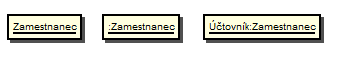
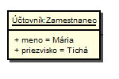
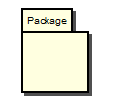
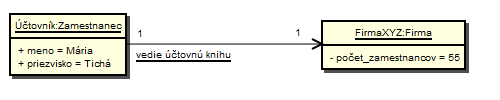
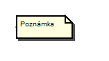

UML - Diagramy objektov (Object Diagram)
Elementy a spojenia v UML .FRI:
- Objekt sa modeluje ako obdĺžnik. Ak obsahuje aj atribúty, tak je rozdelený vodorovnou čiarou na dve oblasti. Objekt zobrazuje meno, atribúty a nezobrazuje operácie (v diagrame tried sa zobrazujú). Meno rovnako ako aj atribúty objektu môžu mať hodnoty. Meno objektu býva podčiarknuté a od názvu triedy je oddelené dvojbodkou. Objekt môže byť buď pomenovaný alebo nepomenovaný.
- Balíček sa používa na zoskupovanie elementov, ktoré spolu zdieľajú rovnakú hierachiu dedičnosti alebo spolu navzájom úzko spolupracujú. Takto zoskupeným elementov poskytuje balíček súhrnné pomenovanie (namespace).
- Väzba predstavuje konkrétny vzťah medzi objektmi. Pomenovaie väzby býva podčiarknuté. Modeluje sa ako orientovaná plná čiara.
- Poznámka slúži na bližšie popísanie jednotlivých elementov diagramu a je možné ju pripojiť iba k entitám, nie k vzťahom medzi entitami.
- Čiara k poznámke znázorňuje, ktorú entitu poznámka bližšie popisuje.

Ak objekt zobrazuje atribúty, tak atribúty musia mať aj hodnotu. Syntax pre zápis atribútov je podobný ako je syntax pre zápis atribútov v diagrame tried. Rozdiel je iba v nutnosti udávať hodnoty atribútov.





Pre viac informácii odporúčam navštíviť iné zdroje, napríklad Object Diagram wiki